Zenith_OS
A minimal, secure, and blazingly fast Linux distribution built for developers who demand performance and elegance.
Lightweight
Minimal resource footprint designed to run on any hardware.
Secure
Hardened kernel with mandatory access controls out of the box.
Open Source
Fully transparent. Inspect, modify, and contribute freely.